In this task, we are going to install Jinja2 - that provides templating option. In this section, we use Jinja2 to create template for spine and leaf and configure VXLAN fabric using this Jinja2 templates.
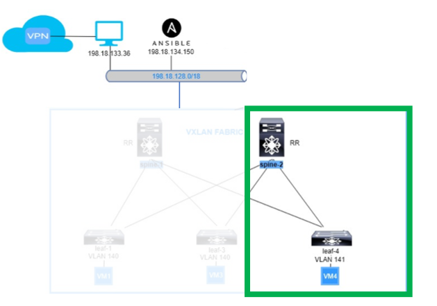
Jinja2 template looks just like the NXOS configurations. We abstract the variables out of the configuration and use simple for loop to feed variables into the template.
Step 1: Install jinja2
- On the Ansible node, install jinja2 using
pip install jinja2command. If it is already installed, we will get the message “requirement is satisfied”:
[root@rhel7-tools ~]# pip install jinja2
Below screenshot shows the output of above command:
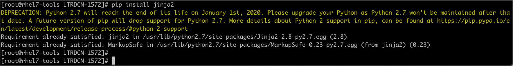
Step 2: Playbook for jinja2 Spine
In this section, we will use Jina2 template and Ansible to provision the VXLAN Fabric.
-
Switch to “Atom”, right click on the folder
LTRDCN-1572and ClickNew Fileto create a new playbook namedjinja2_fabric.yml.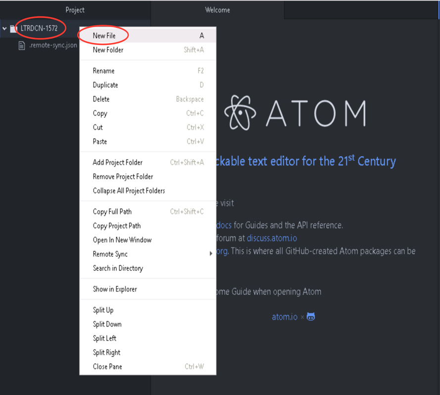
-
Name the new file
jinja2_fabric.ymland hit enter as shown below. It will create this new file:
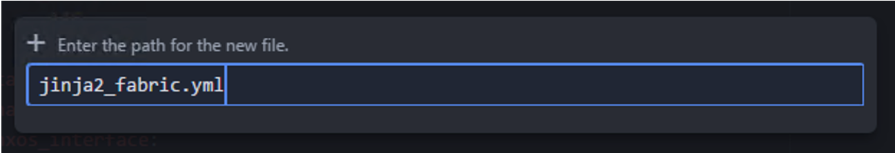
-
Also, on the lower bar of the ATOM, verify that file grammar of YAML is selected instead of default "Plain Text". If YAML is not selected, then you should choose it from the listed options.
-
Now enter below data in this playbook:
---
- hosts: jinja2_spine
connection: local
roles:
- jinja2_spine
-
The contents of the jinja2_fabric.yml file should look like
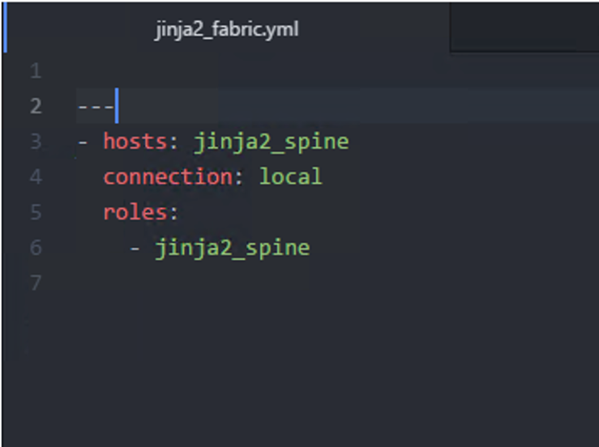
-
Click
FileandSave. This will save the playbook, and also ftp the playbook to Ansible server using pre-configured “remote-sync” package -
On the MTputty, go back to the ssh session to Ansible Server node (198.18.134.150).
-
On Ansible server node (198.18.134.150), verify that the (below highlighted) 2 groups exists of jinja2_spine and jinja2_leaf in the inventory file named "hosts" (under LTRDCN-1572 directory) exists by issuing below commands:
[root@rhel7-tools ~]# cd /root/LTRDCN-1572
[root@rhel7-tools ~]# more hosts
Below screenshot confirms the ouptut and appropriate IP addresses of above command:

Step 3: Create new roles and vars
In this section, we will create two new roles for provisioning Fabric with Jina2 template.
-
On the MTputty, go back to Ansible Server node (198.18.134.150), switch to ‘roles’ directory; create ‘jinja2_spine’ and ‘jinja2_leaf’ roles using ansible-galaxy using below commands:
[root@rhel7-tools ~]# cd ~/LTRDCN-1572/ [root@rhel7-tools LTRDCN-1572]# cd roles/ [root@rhel7-tools roles]# ansible-galaxy init jinja2_spine&&ansible-galaxy init jinja2_leaf -
Below screenshot shows the output of above command:
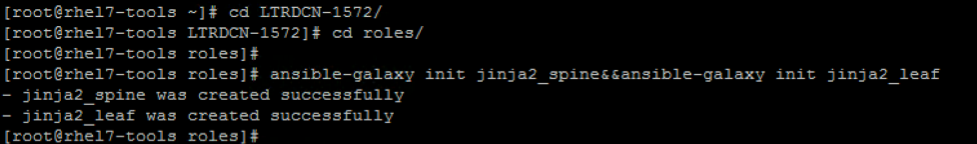
Note: ‘ansible-galaxy’ will initialize the role structure and create necessary folders with default name like ‘tasks’, ‘template’, ‘vars’ etc.
-
change directory path to LTRDCN-1572/roles/jinja2_spine and check the content of local directory (
ls) as per below commands:[root@rhel7-tools]# cd ~/LTRDCN-1572/roles/jinja2_spine/ [root@rhel7-tools jinja2_spine]# ls -
Below screenshot shows the output of above file. Note that various directories including tasks, templates, vars exists. We will use these in later steps.
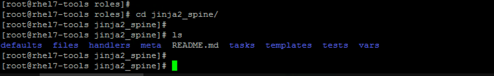
Next:
-
Create empty jinja2 template files for spine and leaf under templates folder for each role by running below commands:
[root@rhel7-tools roles]# cd ~/LTRDCN-1572/roles [root@rhel7-tools roles]# touch jinja2_spine/templates/spine.j2 [root@rhel7-tools roles]# touch jinja2_leaf/templates/leaf.j2 -
Switch to “Atom” and sync the new created folders between Ansible node and Remote desktop by pressing Right Click on the folder
LTRDDCN-1572, then openRemote SyncselectDownload Folderas shown below:
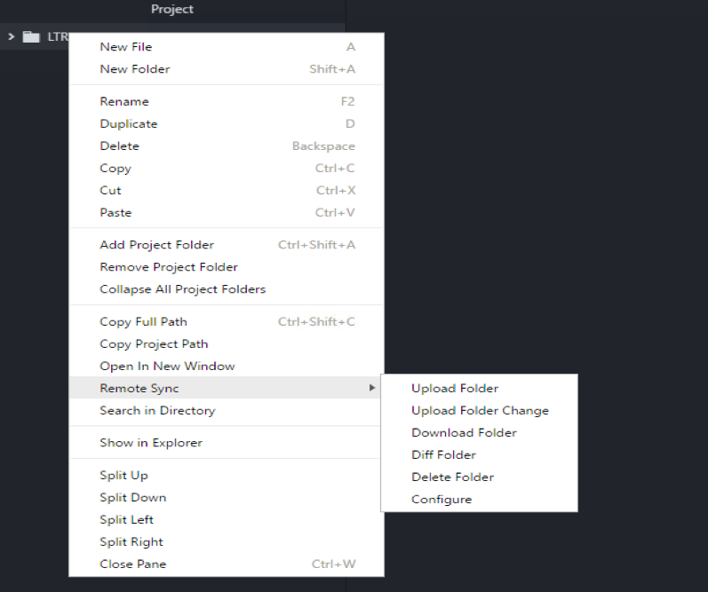
- Once the download is done you should see the new folder & files (
roles) appear on ATOM as well.
Step 4: Create variable file for “jina2_spine” role
“ansible-galaxy” automatically creates empty “main.yml” file under “vars” folder. We can use “Atom” to edit the main.yml file to include the following variables that will be used in jinja2 template.
-
Switch to ATOM, then open up the project folder
LTRDCN-1572from the left pane and openmain.ymlfile under “roles/jinja2_spine/vars/” as shown below: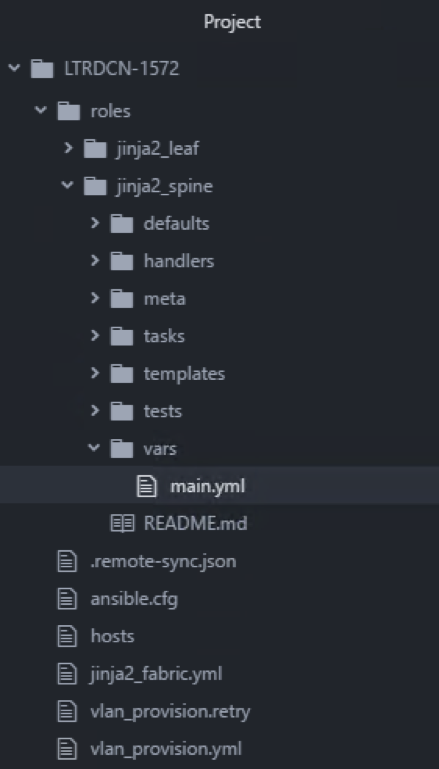
-
use “Atom” to edit the “main.yml” file to include the following variables that will be used in jinja2 template. You can copy and paste all of the below content into main.yml file. Note: as per steps in previous tasks, be careful with YAML content since its space sensitive.
---
# vars file for jinja2_spine
nxos_provider:
username: "{{ user }}"
password: "{{ pwd }}"
timeout: 100
host: "{{ inventory_hostname }}"
asn: 65000
bgp_neighbors:
- remote_as: 65000
neighbor: 192.168.0.8
update_source: Loopback0
- remote_as: 65000
neighbor: 192.168.0.10
update_source: Loopback0
- remote_as: 65000
neighbor: 192.168.0.11
update_source: Loopback0
L3_interfaces:
- interface: Ethernet 1/1
- interface: Ethernet 1/2
- interface: Ethernet 1/3
- interface: Ethernet 1/4
- interface: loopback 0
- interface: loopback 1
s1_loopback: 192.168.0.6
s2_loopback: 192.168.0.7
-
Contents of the ‘main.yml’ file should look like below:
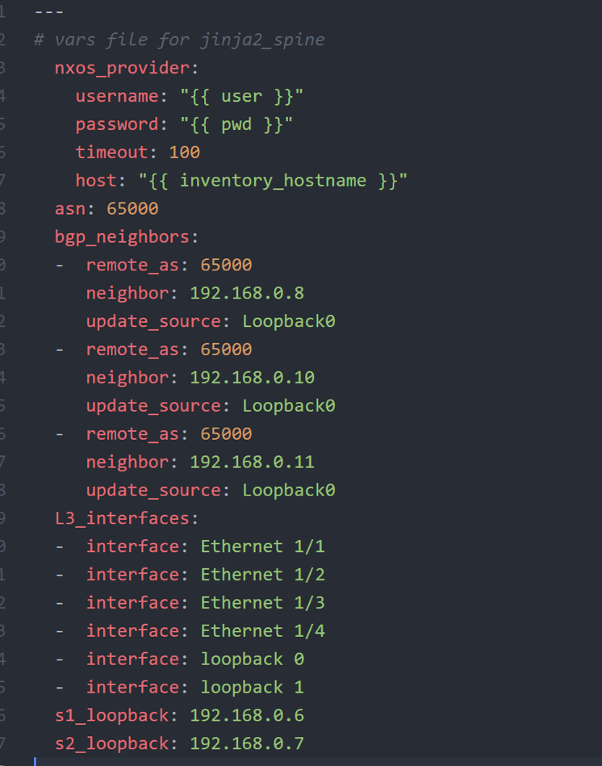
-
Click
FileandSave. This will save the playbook, and also ftp the playbook to Ansible server using pre-configured “remote-sync” package.
Step 5: Create Jinja2 template for spine role
- On ATOM open up the project folder
LTRDCN-1572from the left pane and openspine.j2file under “roles/jinja2_spine/templates” as shown below:
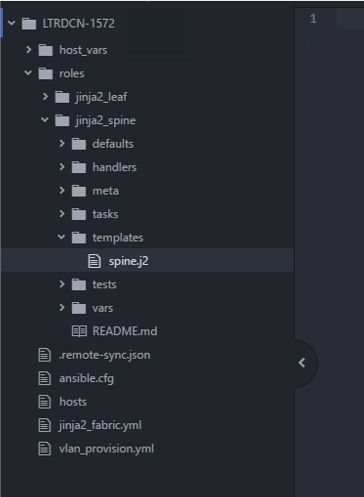
NOTE: If the file does not appear on the ATOM, then go ahead and execute below 4 steps to get it sync. If the spine.j2 file appears in above folder then you can skip below 4 steps:
- On Ansible server (198.18.134.150) using your SSH session, change Directory to folder LTRDCN-1572 using below command:
[root@rhel7-tools ~]# cd ~/LTRDCN-1572
- further, change Directory (cd) to folder roles/jinja2_spine/templates using below command:
[root@rhel7-tools LTRDCN-1572]# cd roles/jinja2_spine/templates
- Type
touch spine.j2as shown below:
[root@rhel7-tools templates]# touch spine.j2
- After entering the command, go back to ATOM, right click on folder
LTRDCN-1572, scroll to choose optionRemote Syncoption and chooseDownload Folderas shown below:
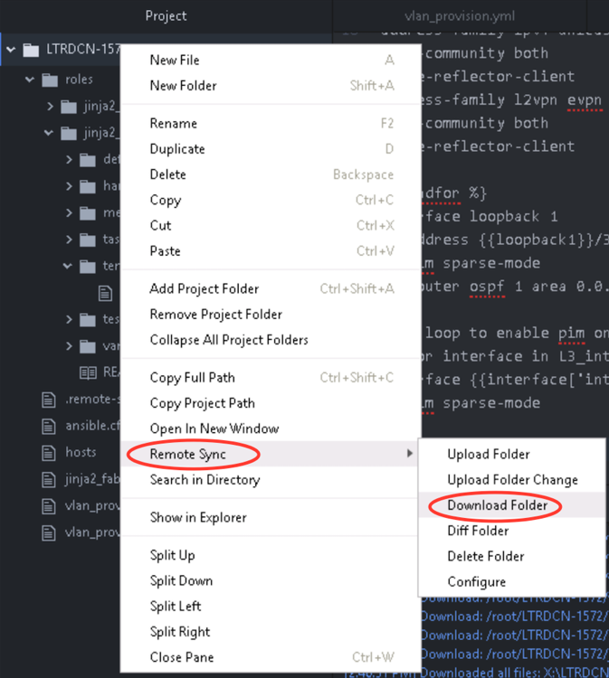
Now that the file/folder appears properly on ATOM, go ahead and proceed with further steps:
-
To reduce the typo, you can download jina2 template from the box folder spine.j2. Below is the link to this folder:
-
The file would be under
LTRDCN-1572/roles/jinja2_spine/templates/spine.j2(link below) as shown in below screenshot:https://cisco.app.box.com/folder/44981931157
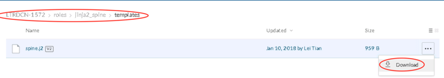
-
After the file is downloaded to the PC (on your RDP session), go to the downloads folder. Move (or copy) the file from the downloads folder and paste the file in the projects folder
TFTP_Data (\\AD1) (X:)-->LTRDC-1572-->roles-->jinja2_spine-->templatesas shown below:
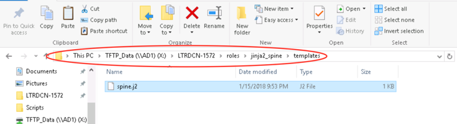
-
After moving/copying this file to above folder location, open this file on ATOM. You do this by going to
FilethenOpen File…on ATOM, and browse to thisspine.j2file that was just saved inX:\LTRDCN-1572\roles\jinja2_spine\templatesas shown below: 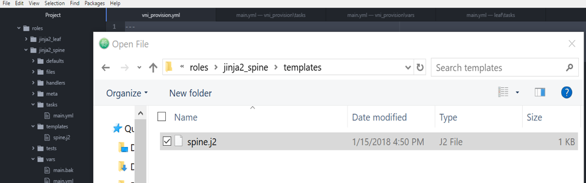 -
After opening “spine.j2” file from ATOM (as shown in below screenshot confirming the updated content), go to
File–->Saveto push template file to Ansible node: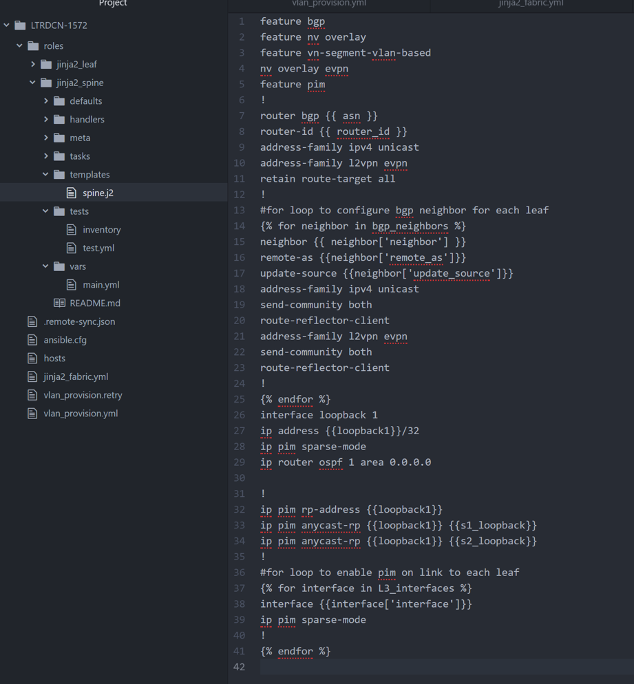
-
You can verify that updated file content is on Ansible server (198.18.134.150) using your SSH session by issuing below commands:
[root@rhel7-tools templates]# cd /root/LTRDCN-1572/roles/jinja2_spine/templates
[root@rhel7-tools templates]# more spine.j2
Partial output of above command is shown in below screenshot confirming : 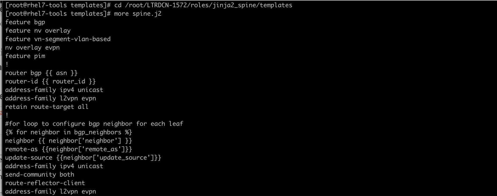
Step 6: Create playbook for jinja2_spine role
The playbook for jinja2_spine roles has two tasks. First task uses ansible template module to generate configuration file based on jinja2 template created in last step. The configuration file is saved in “file” folder. Second task is push the configuration to switch.
“ansible-galaxy” automatically creates empty “main.yml” file under “tasks” folder. We are going to use “Atom” to edit the main.yml file.
- On ATOM, open up the project folder
LTRDCN-1572and editmain.ymlfile underroles/jinja2_spine/tasks/to include following:
---
# tasks file for jinja2_spine
- name: Generate Spine Config
template: src=spine.j2 dest=roles/jinja2_spine/files/{{inventory_hostname}}.cfg
- name: Push Spine Config
nxos_config:
src: roles/jinja2_spine/files/{{inventory_hostname}}.cfg
match: none
provider: "{{ nxos_provider }}"
-
Contents of the ‘main.yml’ file should look like below:
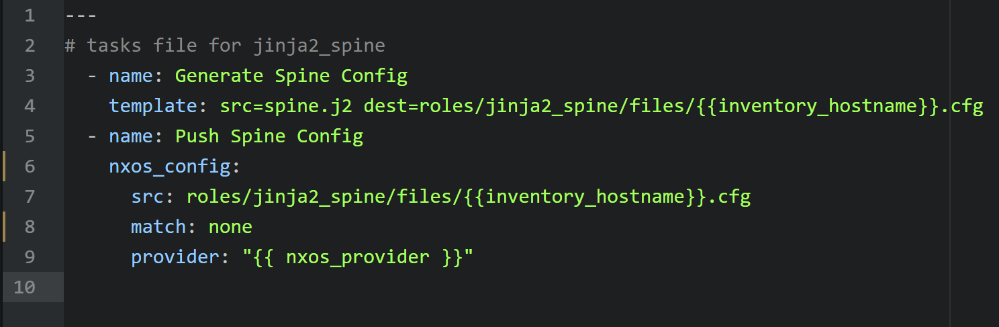
-
Click
FileandSave. This will save the playbook, and also ftp the playbook to Ansible server using pre-configured “remote-sync” package.
NOTE: In the above YAML file, ansible module named “nxos_config” is used. This module performs below activities:
- It uses source path of the file (“src”) that contains the configuration or configuration template to load into spine
- Since “match” option is set to none (yes), hence the module will not attempt to compare the source configuration with the running configuration on the remote device.
Step 7: Run Jinja2_fabric playbook
In this section you will run the playbook created in step 2 (in this task 3), this will generate configuration file for Spine-2 switche from the template.
The playbook will also push the configuration file to Spine-2 switches.
-
Run the ansible playbook by going to folder LTRDC-1572 and executing the below commands:
[root@rhel7-tools roles]# cd ~/LTRDCN-1572/ [root@rhel7-tools LTRDCN-1572]# ansible-playbook jinja2_fabric.ymlNote: It will take few minutes to push configuration
Below screenshot shows the execution of above playbook:
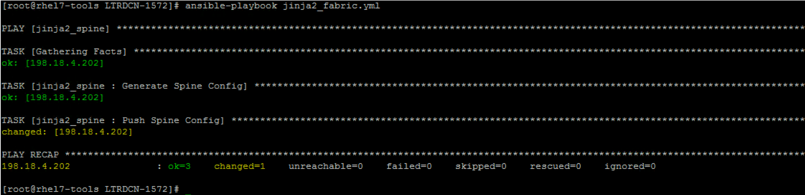
To verify the execution of this playbook, you can:
-
Login to Spine-2 switch (on MTputty) to verify configuration has been pushed by double clicking the spine-2 icon in the left pane on MTputty. If prompted then login with credentials admin/C1sco12345
-
Execute
show run bgpcommand on the switch to confirm the configurations have been provisioned (as shown below):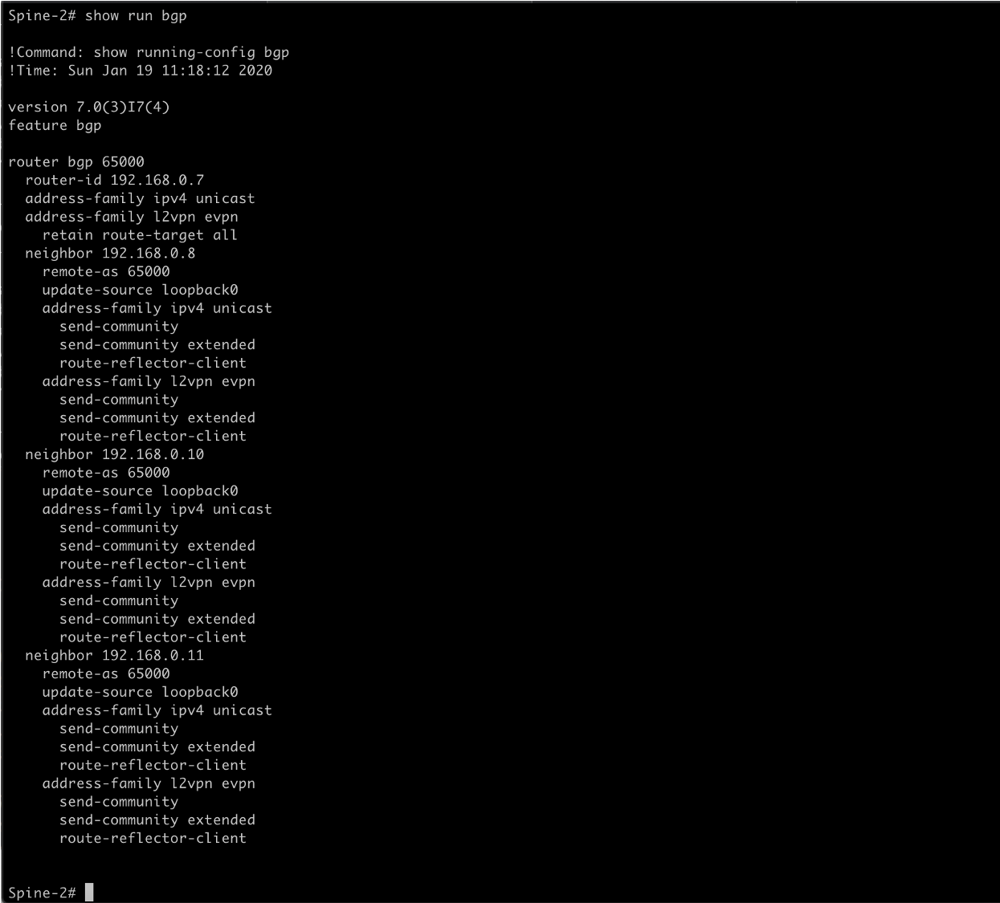
Step 8: Modify playbook for Leaf
In this section, we will use Jina2 template and Ansible to provision the VXLAN Fabric on leaf-4. We are going to add jinja2_leaf this time to the already created playbook in step 2.
- Switch to “Atom”, click on the folder
LTRDDCN-1572, edit the existing playbookjinja2_fabric.ymlfile for a role for leaf (named jinja2_leaf). Add the below content at the end of existing file (i.e., add the below content to existing content in this file (do not overwrite existing content):
- hosts: jinja2_leaf
connection: local
roles:
- jinja2_leaf
- Below screenshot shows the contents of jinja2_fabric.yml file in Atom after adding the above configs:
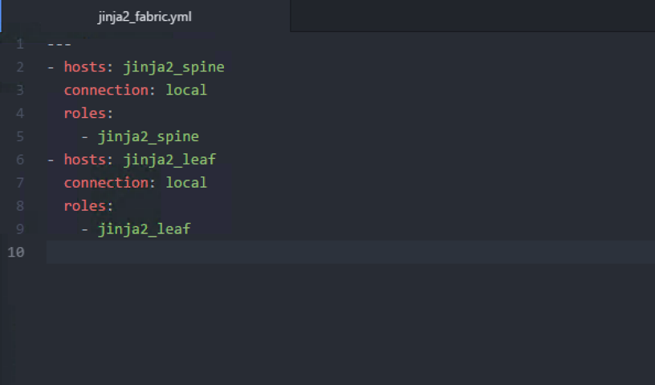
- Click
FileandSave. This will save the playbook, and also ftp the playbook to Ansible server using pre-configured “remote-sync” package.
Step 9: Variable file for jinja2_leaf role
- On ATOM, open up the project folder
LTRDCN-1572and editmain.ymlfile underroles/jinja2_leaf/vars/to include following:
---
# vars file for jinja2_leaf
nxos_provider:
username: "{{ user }}"
password: "{{ pwd }}"
timeout: 100
host: "{{ inventory_hostname }}"
asn: 65000
bgp_neighbors:
- remote_as: 65000
neighbor: 192.168.0.6
update_source: Loopback0
- remote_as: 65000
neighbor: 192.168.0.7
update_source: Loopback0
rp_address: 192.168.0.100
L3_interfaces:
- interface: Ethernet 1/1
- interface: Ethernet 1/2
- interface: loopback 0
- interface: loopback 1
L2VNI:
- vlan_id: 140
vni: 50140
ip_add: 172.21.140.1
mask: 24
vlan_name: L2-VNI-140-Tenant1
mcast: 239.0.0.140
- vlan_id: 141
vni: 50141
ip_add: 172.21.141.1
mask: 24
vlan_name: L2-VNI-141-Tenant1
mcast: 239.0.0.141
L3VNI:
- vlan_id: 999
vlan_name: L3-VNI-999-Tenant1
vni: 50999
-
Below screenshot shows the contents of jinja2_leaf\vars\main.yml file in Atom:
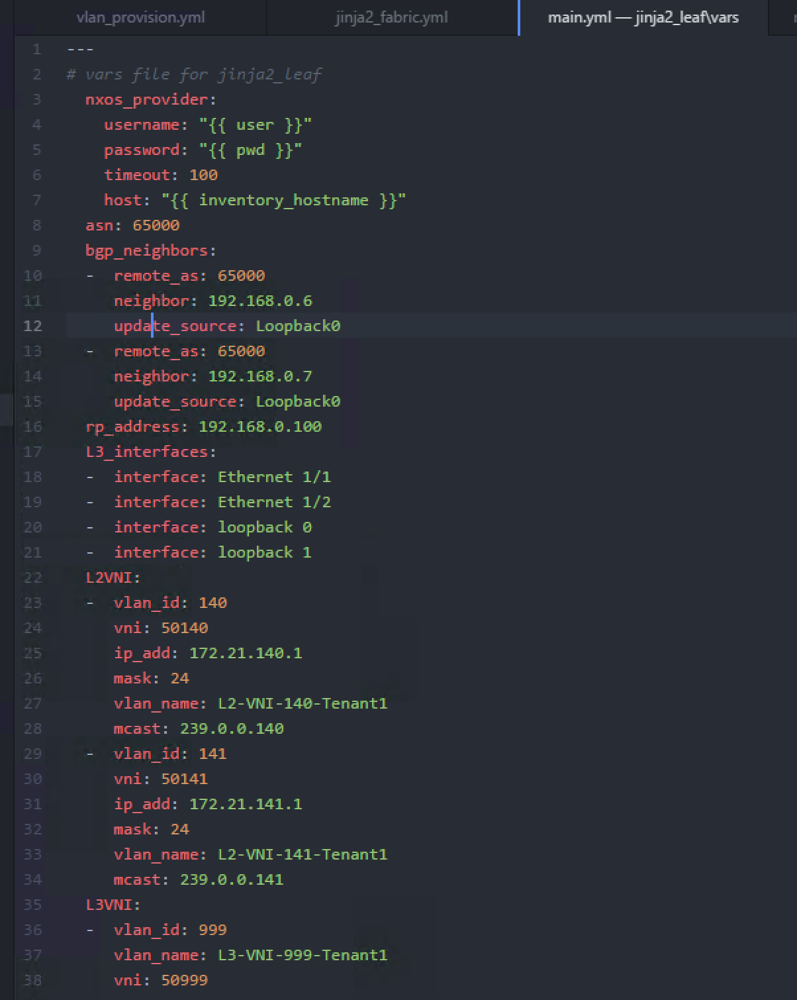
-
Click
FileandSave. This will save the playbook, and also ftp the playbook to Ansible server using pre-configured “remote-sync” package.
Step 10: Jinja2 template for leaf role
- On ATOM, open up the project folder
LTRDCN-1572and open leaf.j2 file under “roles/jinja2_leaf/templates/”
NOTE: if the file does not appear on the ATOM, then go ahead and execute below 4 steps to get it sync. If the leaf.j2 file appears in above folder then you can skip below 4 steps:
-
On MTputty, change Directory to folder LTRDCN-1572 on Ansible server (198.18.134.150) using below command:
cd ~/LTRDC-1572 -
further, change Directory (cd) to folder roles/jinja2_leaf/templates using below command:
cd roles/jinja2_leaf/templates -
Type
touch leaf.j2 - After entering the command, go back to ATOM, right click on folder
LTRDCN-1572, scroll to choose optionRemote Syncoption and chooseDownload Folder
Now that the file/folder appears properly on ATOM, go ahead and proceed with further steps:
-
To reduce the typo, you can download jina2 template from the box folder leaf.j2. Below is the link to this folder:
-
To reduce the typo, you can download jina2 template from the box folder leaf.j2. Below is the link to this folder:
-
The file would be under
LTRDCN-1572/roles/jinja2_leaf/templates/leaf.j2(link below) as shown in below screenshot:https://cisco.app.box.com/folder/44981518497
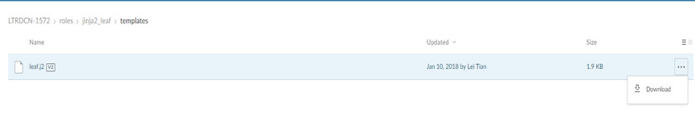
-
After the file is downloaded to the PC (on your RDP session), go to the downloads folder. Move (or copy) the file from the downloads folder and paste the file in the projects folder
TFTP_Data (\\AD1) (X:)-->LTRDC-1572-->roles-->jinja2_leaf-->templatesas shown below:
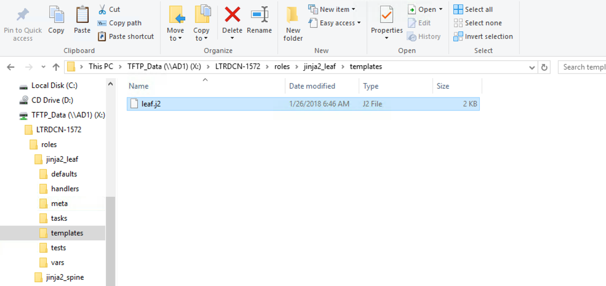
-
On ATOM, go to
FilethenOpen File…and browse to thisleaf.j2that was just saved inX:\LTRDCN-1572\roles\jinja2_leaf\templatesas shown below screenshots: 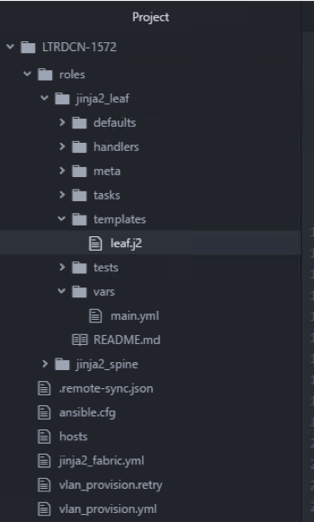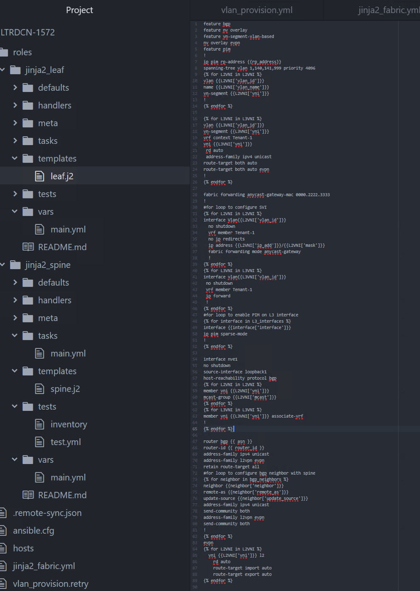
-
After opening “leaf.j2” file from ATOM, go to
File–Saveto push template file to Ansible node:
Step 11: Create playbook for jinja2_leaf role
The playbook for jinja2_leaf roles has two tasks.
- First task uses ansible template module to generate configuration file based on jinja2 template created in last step. The configuration file is saved in “file” folder.
- Second task is to push the configuration to switch.
“ansible-galaxy” automatically creates empty “main.yml” file under “tasks” folder. We are going to use “Atom” to edit this main.yml file.
- On ATOM, open up the project folder
LTRDCN-1572and edit “main.yml” file under “roles/jinja2_leaf/tasks/” to include following:
---
# tasks file for jinja2_leaf
- name: Generate Leaf Config
template: src=leaf.j2 dest=roles/jinja2_leaf/files/{{inventory_hostname}}.cfg
- name: Push Leaf Config
nxos_config:
src: roles/jinja2_leaf/files/{{inventory_hostname}}.cfg
match: none
provider: "{{ nxos_provider }}"
Below screenshot shows how the contents of jinja2_leaf/taks/main.yml file looks like in Atom:
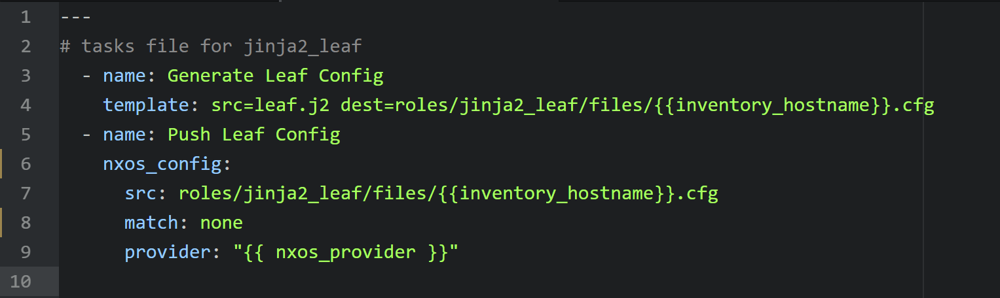
Step 12: Run Jinja2_fabric playbook
In this section you will run the playbook created in step 8, this will generate configuration file for Spine-2 and Leaf-4 switches. It will also push the configuration file to both switches.
-
Before running the ansible-playbook, you may log into the leaf-4 (in MTputty SSH session) and verify that no bgp configurations exist by running
show running bgpcommand as shown below: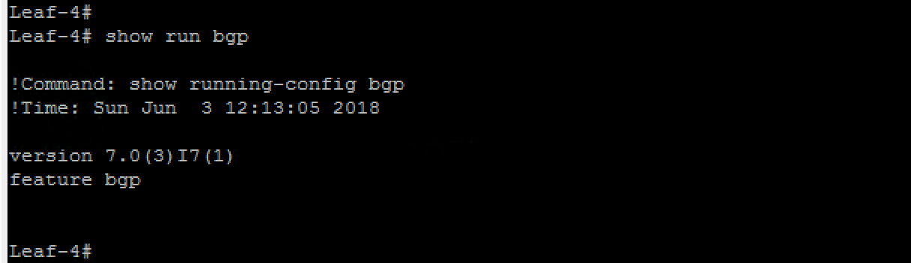
NOTE: It might take couple of minutes for the configuration to be pushed to via the Ansible Server. It is working in the background.
-
On the Ansible node (in MTputty SSH session), run the command (
ansible-playbook jinja2_fabric.yml) to execute the playbook as shown below:[root@rhel7-tools LTRDCN-1572]# ansible-playbook jinja2_fabric.ymlBelow screenshot shows the output of above command:
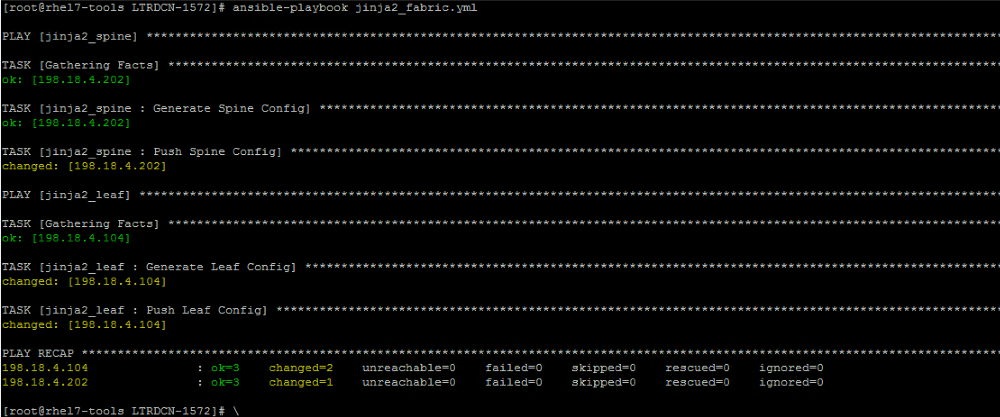
-
After the configuration push is successful, login (on MTputty SSH session) to leaf-4 switch to verify configuration has been pushed by running below command:
show running-config bgpThe output of above command is shown below:
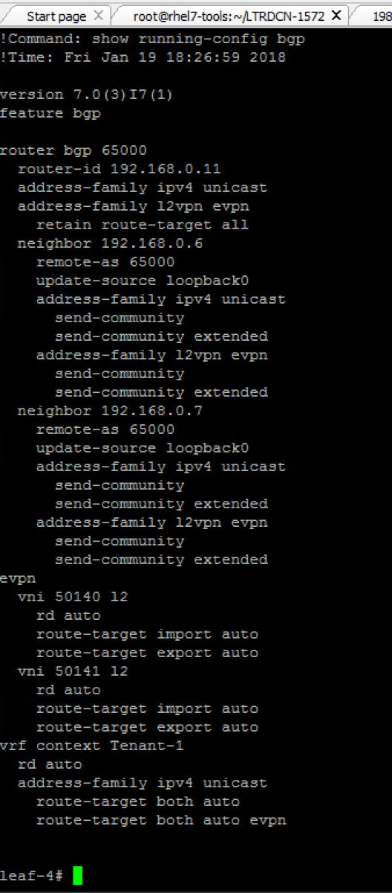
Congrats: you have successfully concluded this task by using jinja2 templates with Ansible for Cisco Nexus switches